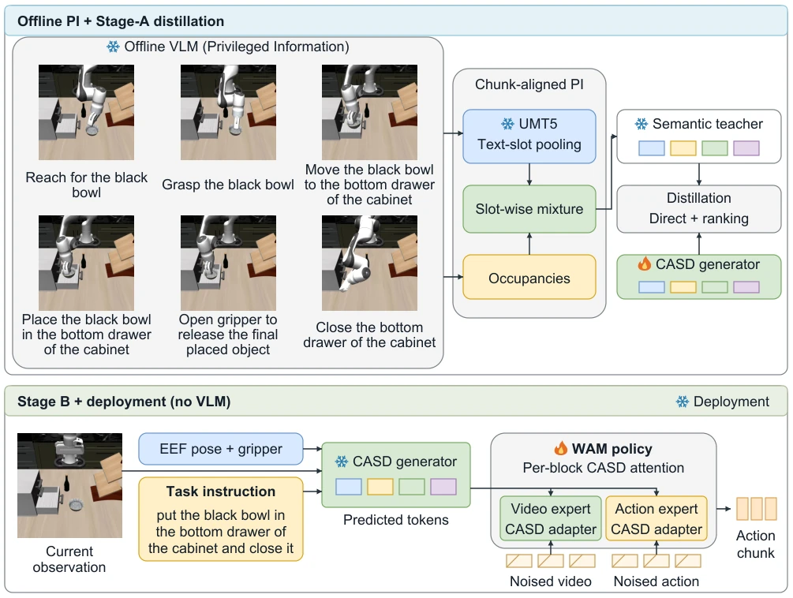
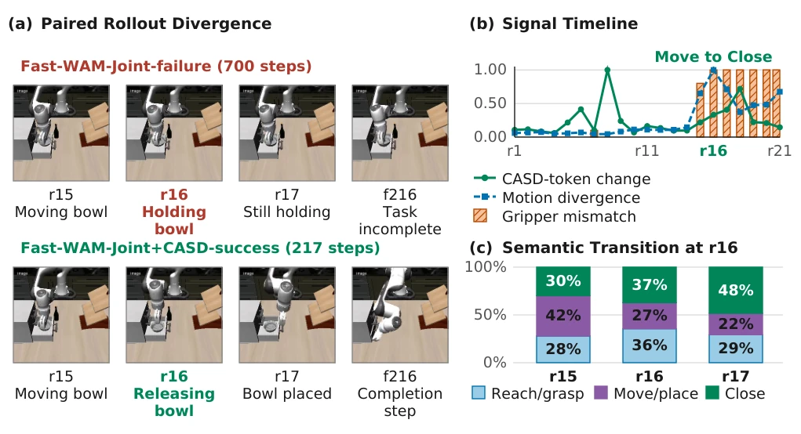

This CASD adds a "time slice" semantic label to multi-stage tasks, essentially feeding VLA models some "future knowledge". The core is calculating the proportion of different stages within an action chunk, treating it as a weighted mixed target, rather than just labeling the current step. This indeed solves the pain point of incomplete labels when chunks cross stages. However, this approach is picky about baseline models; Fast-WAM's Joint and IDM improved with CASD, but Uncond dropped, indicating semantic conditions are not a panacea and depend on how the backbone consumes them. Moreover, the quality of offline VLM labeling directly determines the upper limit; if the VLM cuts stages incorrectly, the distilled teacher is skewed. Although online VLM is not used during deployment, training relies on future information (privileged info); whether this "open-book exam" can be fully transferred to "closed-book" deployment depends on the robustness of specific scenarios. Overall, it is a clever data augmentation method, but do not expect it to solve all long-horizon planning problems, especially when environmental distribution shift is severe.
Existing VLA policies typically predict future action chunks, but in multi-stage tasks, instructions are fixed while current goals may change. For example, "put bowl in drawer and close", a chunk may contain three actions: move, release, reach, but labels often only mark "move" or "close", ignoring the stage proportion within the chunk. This leads to a mismatch between supervision signals and prediction time scales. Related work such as RT-H (Belkhale et al. 2024) uses language hierarchy but lacks fine-grained supervision on stage distribution within chunks; SARM (Chen et al. 2025a) focuses on progress rewards, rather than chunk-level semantic composition. CASD attempts to segment demonstrations via offline VLM, calculate stage occupancy within chunks, generate weighted semantic targets, filling this supervision gap. Additionally, world models like Fast-WAM (Yuan et al. 2026) predict future vision but lack explicit semantic stage constraints; CASD attempts to align semantic structures at the action prediction scale.
方法Method
整体流程分两阶段蒸馏。Stage A 训练 CASD Generator：利用离线 VLM（GPT-5.4）将演示轨迹分割为有序阶段，计算每个阶段在动作 chunk 内的时间占比（occupancy），生成加权语义教师目标（Teacher）。Generator 仅用当前观测、机器人状态和指令预测该目标，通过直接回归和 ranking loss 训练，确保能从当前状态恢复未来语义上下文。Stage B 训练策略：冻结 Generator，将其预测的语义 token 注入策略模型（如 Fast-WAM）。通过 Cross-attention adapters 将语义条件传递给视频和动作专家。部署时，Generator 每步查询运行一次，无需在线 VLM 调用。创新点在于：1. 定义 chunk 级语义监督，包含阶段过渡信息；2. 使用当前输入预测未来语义上下文，实现 privileged information 的蒸馏；3. 冻结 Generator 确保训练与部署条件一致，避免分布偏移。
The overall process is divided into two-stage distillation. Stage A trains CASD Generator: utilizing offline VLM (GPT-5.4) to segment demonstration trajectories into ordered stages, calculating time occupancy (occupancy) of each stage within action chunks, generating weighted semantic teacher targets (Teacher). Generator predicts this target using only current observation, robot state, and instruction, trained via direct regression and ranking loss, ensuring future semantic context can be recovered from the current state. Stage B trains policy: freezing Generator, injecting its predicted semantic tokens into the policy model (e.g., Fast-WAM). Passing semantic conditions to video and action experts via Cross-attention adapters. During deployment, Generator is queried once per step, requiring no online VLM calls. Innovations lie in: 1. Defining chunk-level semantic supervision, including stage transition information; 2. Predicting future semantic context from current input, achieving privileged information distillation; 3. Freezing Generator to ensure training and deployment conditions are consistent, avoiding distribution shift.

Figure 1: Two-stage privileged semantic distillation in CASD. Offline stage annotations and chunk occupancies define a fixed semantic teacher. Stage A trains the CASD generator to predict these tokens from current inputs. Stage B freezes the generator and conditions the video–action policy on its predictions. The offline annotations and future-dependent targets are absent at deployment.
On four benchmarks: LIBERO, LIBERO-Plus, RoboTwin 2.0, and MolmoSpaces. Baselines include Fast-WAM variants (Joint, IDM, Uncond) and DreamZero. Metric is success rate. On LIBERO, IDM+CASD reached 98.9% (baseline 98.0%), Joint+CASD 98.8% (baseline 98.5%), but Uncond dropped. Under LIBERO-Plus distribution shift, CASD enhanced versions generally outperform RIFT reported baselines. On RoboTwin two-handed, Joint+CASD reached 93.0% (baseline 90.6%). On MolmoSpaces, DreamZero+CASD 47.9% (baseline 40.7%). Figure 2 shows cases, CASD releases bowl early, baseline timeout. Found semantic condition beneficial for Joint/IDM, potentially harmful for Uncond, depending on backbone characteristics. Teacher matching shows ability to recover boundary-crossing context.

Figure 2: A paired LIBERO-Long rollout showing where the baseline and CASD trajectories diverge. The Fast-WAM-Joint baseline times out, whereas Fast-WAM-Joint+CASD succeeds from the same recorded initial observation with matched inference seeds. (a) By replan r16, CASD has begun releasing the bowl while the baseline keeps holding it. (b) This behavioral difference coincides with the largest motion divergence and complete gripper-command disagreement; token and motion signals are normalized separately. (c) A post-hoc convex fit to task-specific teacher prototypes shows a shift from Move/place toward Close. The displayed weights describe the fit and do not enter the policy.